|
AIPS++ Newsletter
January 2002
Articles
|
Main
Newsletter
Index
Articles:
MSPLOT
Image Mask
Handling
The AIPS++
Viewer
The VLA
Filler
Parallelization
AIPS++ for
Amateur Radio
Astronomy
|
Msplot
Tim Cornwell (revised by Ralph Marson) - NRAO/Socorro
The msplot tool is currently the main interactive tool for displaying
and editing data from an AIPS++ MeasurementSet. It is written as an AIPS++
tool using a number of lower-level tools such as ms, pgplotter, and
the viewer. An msplot tool can be
constructed either using the toolmanager or from the command line using:
mymsplot := msplot('mydata.ms')
However if you wish to flag data in the measurement set you should use:
mymsplot := msplot('mydata.ms', edit=T)
Either of these commands will start a graphical interface to mymsplot
allowing the user to display and optionally edit the data in the
measurement set. Currently, msplot is entirely GUI-based so that none of the
operations can be invoked from the command line.
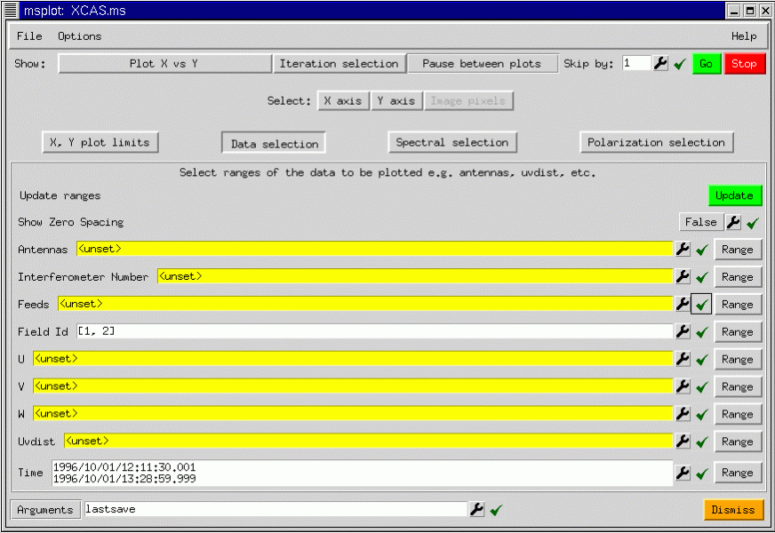
The GUI shows a number of buttons controlling the data selection and the
type of plot or display produced. What data is plotted and how it is
displayed can be chosen as follows:
*
X, Y plot limits: This panel allows you to manually set the limits on
the range of values plotted. By default the limits are chosen
automatically to encompass the entire range of values.
*
Data Selection: This panel allows you to select what subset of the
data will be plotted. Selections can be made according to a number
of different columns in the measurement set including antenna-id,
antenna pair (or interferometer), feed-id, field-id, etc.
*
Polarization selection: This panel determines which polarizations
are plotted. Bothe native polarization like XX, XY, RR, LR or derived
polarizations like I, Q, U, V may be plotted.
*
Spectral selection: This panel determines which spectral windows
and channels are plotted. On the fly channel averaging can also be
done.
The axes may be chosen as follows:
*
X, Y: msplot allows choice of the axes from a wide range of variables
in the measurement set: antenna, antenna-pair, feed, field, scan
number, spectral window, time, u, v, w, uv distance, time, weight, or
data. The data may be the amplitude, phase, real, imaginary, or
complex part of the observed, corrected, model, residual, or ratio
visibility. In addition, the float_data for single dish data may be
displayed.
*
Image: Instead of a scatter plot, the data may be gridded to an image
and that image displayed.
In addition to these axis selections, msplot can iterate over various
indices such as antenna, feed, field, scan number, spectral window, and
polarization. As you can see, the possibilities are vast!
To show a simple plot, taking advantage of the iteration capabilities, we
show msplot applied to a seven pointing mosaic data set from the VLA. We
plot all corrected visibility amplitudes versus uv distance iterating
over field:
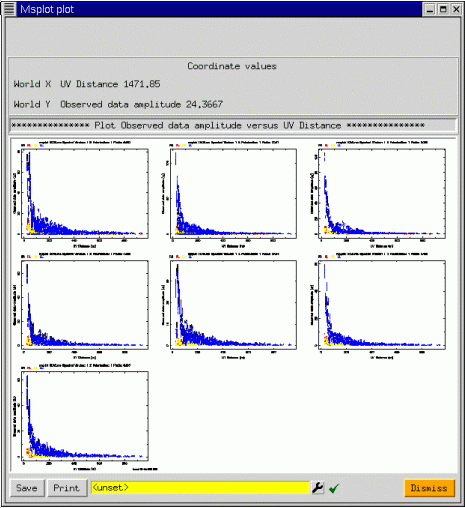
Suppose that we wish to see just the visibilities from the inner antennas
for field 1. Further selection of the data can be performed using the
Data selection button. We press the Data selection button to display the
GUI as shown above. We can either type in the Antenna numbers, or better,
select them graphically by pressing on the spanner (or wrench) for the
Antennas argument.
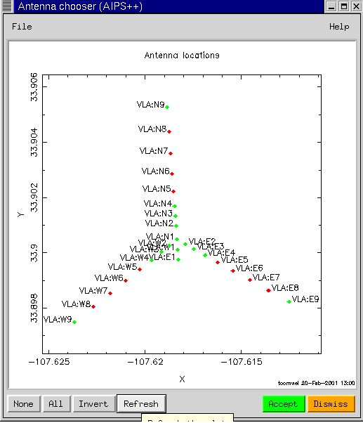
One can select the antennas to be plotted by dragging a box. The
corresponding numbers in the Antennas argument are then filled in when
the Accept button is pressed. Similar graphical elements (gophers in
AIPS++) can be used to get other types of information. If we narrow down
the fields to show only the first field, and repeat the plot, we get:
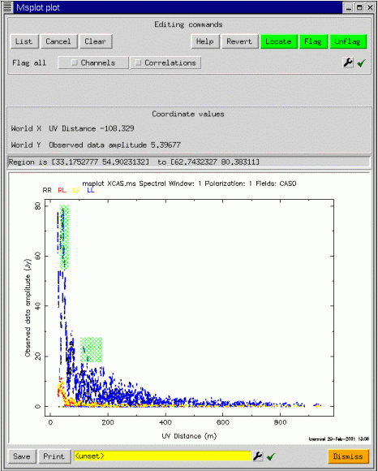
Now since we have only one plot, editing is enabled (assuming msplot
was started with edit=T). To edit points, one uses a click and drag
action to select the points (shown in hatched green), followed by a
press of the Flag button (top right), to actually edit the points. The
plot is then repeated, and the corresponding points are erased.
Editing is done in place on the FLAG and FLAG_ROW columns of the
measurement set. At startup, these current columns are saved to a
scratch table, from whence they may be restored if the user decides
not to apply the edits.
One of the unexpectedly powerful features of msplot is that editing is
possible in any scatter plot. For example, for the same selection, we may
edit in the plot of real versus imaginary part of the visibility:
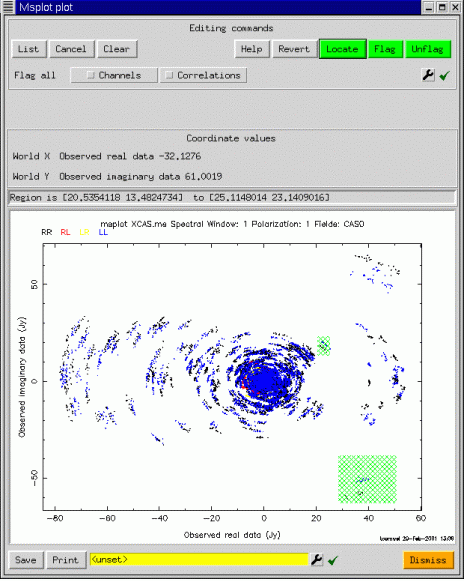
Although we have concentrated on scatter plots, image-like displays are
also possible. msplot uses the viewer to provide the image display
capabilities, and so the interface shown below should have some familiar
aspects:
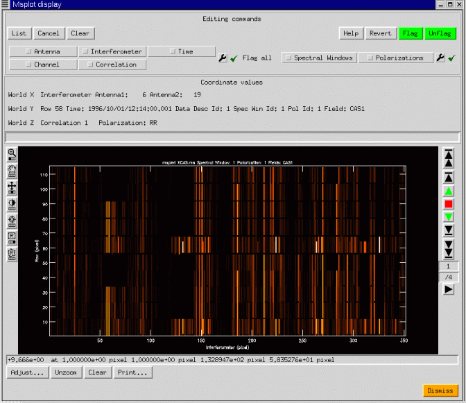
We have shown a simple continuum display, with 4 correlations (RR, RL,
LR, LL). The ability of AIPS++ to access with equal efficiency along
any set of image axes can be used to good effect: the data are gridded
into an image with axes Interferometer, Time, Channel, and
Polarization. Any two of these may be chosen as the first two axes on
the display, and a third scrolled through in a movie. In the example
above, the four correlations are shown as the third axis through which
the viewer may be scrolled.
Editing is possible in the display mode and is preferable to the plotting
mode when the data volume is large.
Msplot can also display single dish data with the same wide range of
possibilities. In the next figure, we show an image display of some 20cm
data from the Arecibo telescope complete with narrow-band interference.
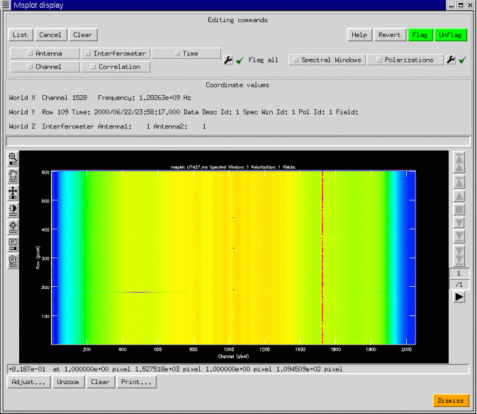
This is only a brief tour of the capabilities of the msplot tool. It
seems to be popular for data editing, once people get accustomed to the
flexibility of the interface. I recommend that you experiment quite a bit
since some of the more esoteric types of plot can provide excellent
diagnostic capabilities.
msplot was designed and developed as a prototype, and it is expected that
many of the capabilities now provided by the pgplotter and the viewer
will instead be offered as native capabilities of the viewer as the
continuing development of the Display Library allows.
Finally, we end with another plot on a 327MHz VLA measurement set, showing
how the various capabilities described here can be combined. We'll let
the reader figure out how this was done.
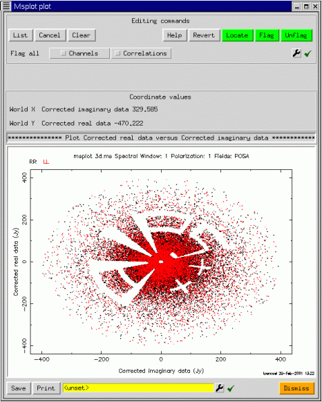
|
Main
Newsletter
Index
Articles:
MSPLOT
Image Mask
Handling
The AIPS++
Viewer
The VLA
Filler
Parallelization
AIPS++ for
Amateur Radio
Astronomy
|
Image Mask Handling
Neil Killeen - ATNF
General
Each pixel in an image has a brightness value and a mask
value. A good pixel (mask value True) is one that the image analysis
software will include in its computations or displays. A bad pixel
(mask value False) is one that will be excluded from calculations. We
store these Boolean mask values in what is termed the 'pixel mask'.
An image may hold zero, one or more pixel masks. This
is rather handy as it allows you to try many things out without having
to continually overwrite the mask.
These masks are identified by name. The Image tool function summary
lists them for you. Here is an example.
Image name : zz
Image type : PagedImage
Pixel mask(s) : mask2 [mask0, mask1]
Region(s) : None
Image units : Jy/beam
Restoring Beam : 53.5 arcsec, 34.2 arcsec, 6 deg
Direction reference : J2000
Axis Type Name Proj Shape Tile Coord value at pixel Coord
incr Units
--------------------------------------------------------------------------------
----------
1 Direction Right Ascension SIN 113 113 00:00:00.000 56.00 -8.000000
e+00 arcsec
2 Direction Declination SIN 76 76 +00.00.00.000 38.00 1.200000
e+01 arcsec
You can see that this image has three masks. The first one, 'mask2'
is currently the active mask. This means it will be applied by default
by all the analysis software. The other two, listed in square brackets,
are not currently active. If none of the masks were active, they would
all be listed in square brackets. This means that effectively
an 'all good' mask is applied.
Managing the pixel masks in an image
There is an Image tool function called maskhandler. Its job is to
let you manipulate masks (e.g. copy, delete etc.). Its job is not to
change the pixel mask values (see following subsection).
Its interface is
- im := image('myimage')
- im.maskhandler(op, name)
where op is a string specifying an operation, and name
is a string argument that may be required depending on the chosen
operation.
The argument op may take the values (minimum match allowed) :
- default
- - this retrieves the name of the default pixel mask. E.g.
print im.maskhandler('def')
- get
- - this retrieves the name(s) of the existing pixel masks. E.g.
print im.maskhandler('get')
- set
- - this lets you change the default pixel mask to that given
by the name argument. If name is empty, then the default mask is
unset (i.e. an all good mask is effectively applied). E.g. im.maskhandler('s
et', 'mask0')
- delete
- - this lets you delete the pixel mask(s) specified by the
name argument. E.g. im.maskhandler('del', "mask1 mask2')
- rename
- - this lets you rename the mask specified by name[1] to name[2]. E.g. im.maskhandler('ren', "mask0
myVeryNiceMask')
- copy
- - this lets you copy a mask to another in the same image,
or copy a mask from another image into this image. E.g. im.maskhandler('c
op', "mask0 copyOfMyMask") or im.maskhandler('cop', "myotherimage:mask0 m
ask0")
As well as the command-line interface, there is also a custom GUI
for the maskhandler function. It is available from the
Toolmanager as well as as via an Image tool command-line function.
g := im.maskhandlergui() # g is a tool itself
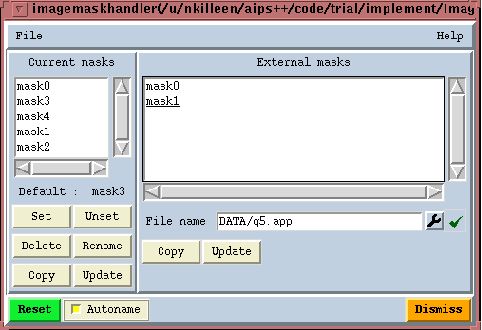
The left-hand list box shows you the pixel masks currently available in
the image. Underneath the list box the default pixel mask, if any, is
listed. You have buttons under the left-hand list box to apply the
desired operation. The sequence is to select a pixel mask or pixel masks
from the list box, and then click the desired button. Popuphelp is on
each button to tell you what they do.
The right-hand list box is used to list the pixel masks from some other
image. You enter the image file name with the file entry widget and then
enter carriage-return. You can copy masks from that image file to the
current image.
Changing the values of pixel masks
There are a few ways in which you can change the values of
a pixel mask.
- putregion
- - The Image tool functions getregion and
putregion can be used to recover the default mask into a Glish
array, change it, and then put it back.
- im := imagemaketestimage('zz')
- local p, m
- im.getregion(pixels=p, pixelmask=m) # Recover pixels and mask
- m[1:10,1:10] := F # Set some mask values to bad (F)
- im.putregion (pixelmask=m) # Replace the default mask
- set
- - The Image tool function set can be used
to set the default mask to one value in a specified region in
the image.
- im := imagemaketestimage('zz')
- im.set(pixelmask=F) # Sets entire mask to bad (F)
- r := drm.quarter()
- im.set(pixelmask=T, region=r) # Sets the mask to good (T) in the s
pecified region
- calcmask
- - This Image tool function is used to create a new
pixel mask or replace an old one via a Boolean Lattice Expression
Language (LEL - see Note 223) expression. This gives you much more scope than th
e
simple set and putregion functions.
The call sequence is im.calcmask(mask, name, default)
- im := imagemaketestimage('zz')
- im.calcmask(mask, name, default)
where mask is a Boolean LEL string expression. If the expression
is not a scalar, the shapes and coordinates of the image and expression
must conform. If the expression is a scalar then the entire pixel mask
will be set to that value.
If name is given, then that is the name of the new pixel mask
(existing ones will be overwritten). If you leave it unset, a name is
made up for you. If the argument default is T, the new
mask is made the default mask.
Note that when the expression is evaluated, any current default
pixel mask in the expression is ignored.
Here are some examples:
- im.calcmask(mask=T)
The given expression (a Boolean) is converted to a string automatically.
When the expression is evaluated it is a scalar, so the whole mask is
set to good (T). This example is the equivalent of im.set(pixelmask=T).
- im := image('zz') # Open image
- im.calcmask(mask='zz>0') # Access image via disk file name
- im.calcmask(mask='$im>0') # Access image via Tool name with \$ syntax
The mask is good (T) when the expression is True. Thus, the new mask
would be bad (False) for all non-positive pixels.
Now for some subtlety. Read carefully ! Any LEL expression can be
thought of as having a value and a mask. Usually the value is Float and
the mask Boolean. In the case of calcmask, because the expression
is Boolean itself, the value is also Boolean. In the second example
above, the expression mask would just be the mask of zz. Now
what calcmask does is create a mask from the expression value
(which is Boolean) and discards the expression mask. Therefore, the
resulting mask is independent of any mask that zz might have.
If you wish the mask of the expression be honoured as well,
then you can do :
- im.calcmask('mask(zz) && zz>0') # Mask of zz included
This says that the output will be True if the current
of zz is True and the expression value is True.
Now one last subtlety. Consider the following expression:
- im.calcmask('zz>min(zz)') # Mask of zz used in min function
- im.calcmask('zz>min(zz:nomask)') # Mask of zz not used in min function
When the scalar function min evaluates a value from the disk file yy,
the default mask of yy will be used. All the scalar
functions look at the mask. If you didn't want the mask to be used you
can use the special LEL :nomask syntax shown in the final example.
The expressions can be as busy as you like. Here is one
that involves two images. The calculated mask is True (good)
when the pixel values of zz are positive or the absolute pixel values
of yy are less than two times the zz absolute pixel values.
- im.calcmask('zz>0 || abs(yy)<2*abs(zz)')
The mask argument
There is an argument, mask, which can be supplied to many Image
tool constructors and functions. It is supplied with a LEL Boolean
expression string. One example of its use is in function calcmask
described above where the resultant mask is stored with the image.
In all other uses, the mask argument is used to generate an
On-The-Fly (OTF) mask. It is generated, used, and discarded once the
function terminates. In the case of calcmask, its use is to store
it, rather than apply it for some other analysis.
The OTF mask is applied in addition to any default mask the image holds.
Here are some examples:
- im := imagemaketestimage('zz')
- im.statistics(mask='$im > 0') # Stats evaluated when default mask of $im a
nd OTF mask are True
- im.view (mask='yy<0') # Displayed when default mask of $im and OTF
mask are True
- im.moments(mask='abs(zz)>3*stddev(zz)')
It is especially handy in the view function.
Replacing masked pixels
Each pixel has a brightness value and a mask value. Sometimes you may
want to replace the value of all masked pixels, and then delete the
mask.
This is done with the Image tool function replacemaskedpixels. The
argument pixels can take a scalar, a scalar LEL expression or a
non-scalar LEL expression of the correct shape.
- im := imagemaketestimage('zz')
- im.calcmask('zz>0')
- im.replacemaskedpixels(pixels='-1*$im') # All masked pixels replaced by the
ir negative
- im.replacemaskedpixels(pixels=0) # All masked pixels replaced by 0
- im.replacemaskedpixels(pixels='min(yy)') # All masked pixels replaced by the
minimum of image yy
- im.maskhandler('set','') # Unset default mask
You can also use the OTF mask argument if you wish. Note that in this
example no actual persistent mask is created.
- im := imagemaketestimage('zz') # Has no mask
- im.replacemaskedpixels(pixels=0, mask='zz>0') # All non-positive values s
et to 0
Pixel masks and regions
Some comment about the combination of pixel masks and
regions-of-interest is useful here. See the Regionmanager tool for basic
information about regions-of-interest first.
Regions are provided to Image tool functions via the standard region
function argument.
Consider a simple polygonal region. This region-of-interest is defined
by a bounding box, the polygonal vertices, and a mask called a 'region
mask'. The region mask specifies whether a pixel within the bounding box
is inside or outside the polygon. For a simple box region-of-interest,
there is obviously no need for a region mask.
Now imagine that you wish to recover the pixel mask of an image from a
polygonal region-of-interest. The mask is returned to you in regular
Boolean array. Thus, the shape of the returned mask array reflects the
bounding-box of the polygonal region. If the actual pixel mask that you
apply is all good, then the retrieved mask would be good inside of the
polygonal region and bad outside of it. If the actual pixel mask had
some bad values in it as well, the retrieved mask would be bad outside
of the polygonal region. Inside the polygonal region it would be bad if
the pixel mask was bad. More simply put, the mask that you recover is
just a logical ``and'' of the pixel mask and the region mask; if the
pixel mask is True and the region mask is True then the retrieved mask
is True (good), else it is False (bad).
Finally, note that if you use the region and mask (the OTF mask)
arguments together then they operate as follows. The shape of the
Boolean expression provided by mask must be the same shape as the image
to which it is being applied. The region is applied equally to the image
and the mask expression. For example
- rm1 := image('rm')
- rm2 := image('rmerr')
- rm1.shape(); rm2.shape()
[128 128]
[128 128]
- r := drm.box([10,10], [50,50])
- rm1.statistics(region=r, mask='rmerr<10') # region applied to 'rmerr'
and 'rm'
|
Main
Newsletter
Index
Articles:
MSPLOT
Image Mask
Handling
The AIPS++
Viewer
The VLA
Filler
Parallelization
AIPS++ for
Amateur Radio
Astronomy
|
AIPS++ Viewer Update
Malte Marquarding - ATNF
What's New
The aips++ viewer tool is expanding it's functionality. Since the
last release following new features have been added or enhanced:
Worked Examples
Skycatalog
A Skycatalog is an aips++ table in a specialized format This
section describes how to use Skycatalog to plot itself on
data of different Direction Coordinate types (J2000, B1950, etc.)
simultaneously. This is useful if for example one wants to see where a
source is on an HI map and at the same time on the sky in galactic
coordinates. The Skycatalog input source might come from a catalog
retrieved from a database and the source coordinates can be of any
direction type. There is tools to simplify creating these tables, the
skycatalog tool.
include 'skycatalog.g';
sc := skycatalog('mycatalog.tbl');
Now we make an image tool, in this case we use the built-in test
image.
include 'image.g'
im := imagemaketestimage('myimage.im');
Now we use Image.findsources() to get
the positions of our sources:
cl := im.findsources();
Now we can fill our skycatalog table with the detected components:
sc.fromcomponentlist(cl);
We have set up a Skycatalog table!
It consists of the following columns:
- Annotation (in this case Src1..N)
- Type (coordinate direction reference type, e.g. J2000)
- Long (first coordinate component)
- Lat (second coordinate component)
- Flux
Now, let's view it.
sc.done(); #done with this tool, the table is on disk mycatlog.tbl
dp := dv.newdisplaypanel(); # create a Display Panel
dd := dv.loaddata(im,'raster'); # load our image
dt := dv.loaddata('mycatalog.tbl','skycatalog'); # load our table
# register the image and table
dp.register(dd);
dp.register(dt);
# make the Annotation string visible and make the font bigger
# This can also be done in the Adjust gui
dt.setoptions([namecolumn=[value="Annotation"],labelcharsize=[value=1.5]]);
The result looks something like
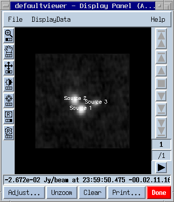
Now the overlay can be fine tuned using the Adjust... panel,
e.g. different colors, offset from the original position etc.
It's best to play around with the available options.
If the selected names Src1/2/3 sound too boring use tbl.browse() to edit the fields in the annotation column.
To be able to change the table you have to delete the old Sky catalog overlay
first:
dt.done(); # remove it
We now use the table tool to modify the skycatalog table.
tbl := table('mycatalog.tbl',readonly=F);
tbl.putcell('Annotation',1,'Source A');
tbl.putcell('Annotation',2,'Source B');
tbl.putcell('Annotation',3,'Source C');
tbl.flush();
And after changing the table fields:
dt := dv.loaddata(tbl,'skycatalog'); # load again
#set the old options
dt.setoptions([namecolumn="Annotation",labelcharsize=1.5]);
dp.register(dt);
ESOLV catalog converted to skycatalog
Here is an example how skycatalog is used to plot source positions
from the ESO-LV catalog . The skycatalog
in this case was created using the Skycatalog.fromascii
function. I have created three catalogs for different arbitrary
redshift ranges - column ``CZ'' (green triangles, yellow boxes and
blue diamonds)using the Table.query function. For the blue
diamonds the table column ``NGC'' was also enabled showing NGC2442,
NGC2434 and NGC2397.
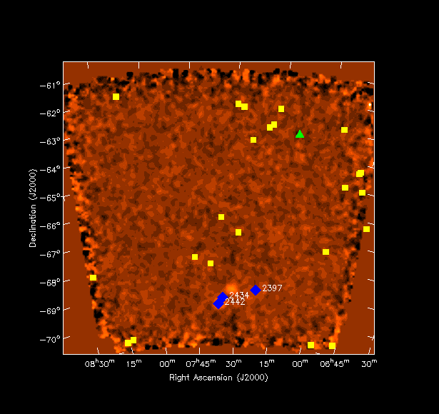
Making RGB multi-frequency overlays
Multi-frequency observations can be easily viewed using the viewer.
After starting the viewer with dv.gui(), Done the
default Display Panel. Select ``New Display: RGB mode'' from the
File menu on the Data Manager. Select your data in
the Data Manager and make Raster Images. Even after
Registering the DisplayDatas on the
Display Panel they won't be visible, because the default is
to display themselves in Colormap mode not in R(ed),G(reen) or
B(lue). Hit the Adjust button and select one of red, green or
blue under ``Basic settings - Color Mode'' for each image. The result
can look like :
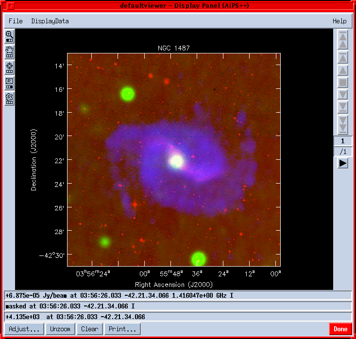
|
Main
Newsletter
Index
Articles:
MSPLOT
Image Mask
Handling
The AIPS++
Viewer
The VLA
Filler
Parallelization
AIPS++ for
Amateur Radio
Astronomy
|
Parallelization of Imager for the Wide-Field Case
K. Golap, A. Kemball, T. Cornwell, W.Young - NRAO/Socorro
Wide-field imaging is among the most computationally demanding
problems in Radio Astronomy. The wait for Moore's law to help is
overtaken by the need for better images, that is more sensitivity and
higher resolution.
The wide-field imaging problem is due to a geometric effect. Image
synthesis arrays can appear to have different geometrical shape from
different points in the sky. It is an issue only when this happen
within the field of view of the array. This happens in non co-planar
arrays and at relatively low frequencies because the primary beam is
large.
Visibilities as observed by non co-planar is given by
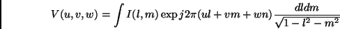
where I(l,m) represents the sky brightness (or image) we want to
recover.
There are several algorithms that exists to invert this 3-D integral
(Cornwell & Perley, 1992). In AIPS++ a multi-faceted transform
algorithm has been chosen for its efficiency. This covers the region
to be imaged by a series of facets, in each of which a 2-D inversion
can be achieved.
We can decompose the visibilities into a summation of re-phased
faceted visibilities:
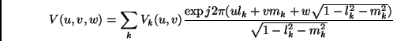
where :
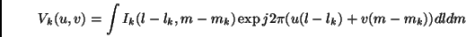
The algorithm implemented in AIPS++ proceeds as follows
- Estimate point spread functions (PSF) for each facet.
- Calculate residual images for all facets(using 2-D transforms)
- Partially deconvolve individual facets using their respective
PSF and update the image model for each facet
- Reconcile different facets by subtracting the model visibility for
all facet models from the visibility data.
- Recalculate residual images and repeat from step 2. In the process of
making residual images, a uv-plane coordinate system is chosen so that the
final image from all facets is projected on a common tangent plane (Sault et
al. 1996).
What has been parallelized so far in wide-field imaging:
We have targeted, as a first level of parallelization, the sections
which are nearly "embarassingly parallel". These are the PSF
estimations, the model visibility calculation from the model images
and the residual image for each facet.
We are using a message passing model of a master controller CPU and
worker processors as implemented in MPI version 1 libraries. This is
implemented on both clusters of workstations and on shared memory
multi-processors architectures. The handling of the parallel imager
(pimager) is the same as imager and it will run on a single CPU or
multi-CPU machines. The only input difference that it needs as one of
its inputs the
number of free CPU's it has available for its functioning.
Some results of speed ups on NCSA's SGI 2000. The data set used has
visibility points and the image was done using 225
facets. The time taken are as follows:
1 CPU 10 days
16 CPUs 830 mins
32 CPUs 610 mins
Future work:
- Optimize the prototype pimager
- Extend the parallelization to include mosaicing
- Explore oportunities in parallel I/O
- Investigate statement level parallelization using OPEN-MP
This work is done in collaboration with NCSA's Alliance.
References:
Cornwell, T. J., and Perley, R. A., Astron. & Astrophys, 261,
353-364, 1992.
Sault, R. Staveley-Smith, L., and Brouw, W. N., Astron. &
Astrophys. Suppl., 120, 375-384, 1996.
|
Main
Newsletter
Index
Articles:
MSPLOT
Image Mask
Handling
The AIPS++
Viewer
The VLA
Filler
Parallelization
AIPS++ for
Amateur Radio
Astronomy
|
The VLA Filler
Ralph Marson - NRAO/Socorro
Reading VLA archive format data into AIPS++
The vlafiller is a tool that is used to convert data in VLA archive
format into an measurement set. VLA archive format is the native data
format that is produced by the online computers at the VLA. All VLA
observations are archived, on tape, in Socorro using this data format
(hence its name). The measurement set is the data format used by
aips++ to store, on disk, the data observed by a telescope. An
overview of this data format is in the previous newsletter (November
2000).
The vlafiller tool tool performs a similar role to the AIPS task FILLM
and has been available to users since the first public release of
aips++ (version 1.2). Since then it has undergone a number of
significant improvements and is now the preferred method for
converting VLA data into a form that can be used within aips++. The
alternative is to use the AIPS to convert the VLA archive data into a
UV-FITS file that can then be read into AIPS++ using the ms tool.
The vlafiller tool can be used in two ways. The simpler way allows you
to do the most common tasks ie., reading a tape and creating a
measurement set, without any of the bother of having to create a
vlafiller tool and remembering to destroy it when you are done. For
example if you have a tape with data in VLA archive format you would
type at the glish prompt.
- include 'vlafiller.g' #1
- vlafillerfromtape('vla.ms', '/dev/nst0') #2
The first of these lines makes all the vlafiller functions available
and the second copies all the data from the tape device to the
measurement set.
Sometimes you may have a tape with data from other projects besides
your own. To only copy the data from your project (AR277) you use the
optional project argument and replace the second line above with.
- vlafillerfromtape('ar277.ms', '/dev/nst0', project='AR277')
otherwise you will copy the data from all projects into the
measurement set. The vlafiller can also 'filter' the data on a number
of other parameters besides the project name. These include
time-range, frequency-range, source-name, sub-array, and
calibrator-code.
The vlafiller can also read VLA archive data from disk, from multiple
files on a tape and from tapes on a remote machine. If you create the
vlafiller tool yourself (as distinct from using the vlafillerfromtape
or vlafillerfromdisk functions) you can do more complex filtering of
the data. All these features and more are discussed in the AIPS++
users reference manual in the nrao.vla.vlafiller section.
|
Main
Newsletter
Index
Articles:
MSPLOT
Image Mask
Handling
The AIPS++
Viewer
The VLA
Filler
Parallelization
AIPS++ for
Amateur Radio
Astronomy
|
Using AIPS++
for Amateur Radio Astronomy
Patrick Wood - Lobert Observatory, Hinesville, Ga
I run an amateur radio observatory from my home. I named my setup
LoBERT, Low Budget Experimental Radio Telescope, because so far the
total price of my system, including the data logging computer, is
under $300. I started the system with just one 15 foot (4.5 meter)
dish, in drift scan mode and an old DSS LNBF. I can only control the
elevation of the dish, so I have to set the dish to the elevation that
I would like to observe that evening and allow the Earth's rotation to
act as my RA drive. The telescope is aligned as close to due south as
I can get it. I have run multiple scans of the sun and found that the
dish is approximately 2 minutes West of due south. I plan on fixing
this as soon as I can. I bought an 8 GHz satellite signal meter to
use as a total power receiver. I run the meter's DC out for the built
in buzzer to a Radio Shack DMM, and wrote a couple of programs to do
the data logging. I tried for quite a while to develop my own data
reduction software, but to no avail. I found the NRAO web site and
found out that they were giving away copies of the AIPS++ system. For
me this was like a dream come true, to be able to run the same
software as "The Big Boys".
I will try and explain how I got my little system to interface with
the AIPS++ system. The original configuration of my system was as
described above. I use an Intel 486DX4-100 running Windows 95 to do
data logging. I can adjust the integration time from 1 second and up.
I currently only go to a maximum of 6 seconds. With the
current setup the half beam width of LoBERT is approximately .5
degrees. Now you have to remember that all of these calculations are
coming from a Food Operations Sergeant in the US Army.
I have the data logger and my Linux box on a LAN. I also have another
old 486DX-25 running Windows 3.1 running as my sky chart system. I
use it to try and figure out exactly what the scope was looking at.
Since I have three different OS running together to obtain a common
goal, I had figure out a way to get the systems to talk to each other.
The way I choose to do this by using the built in Samba networking in
Linux. This simplified the connections to the two Windows machines.
The data logging computer is running a program developed by a guy
named Ned Lewis. His original plan for the software was to do HEPS,
High Energy Pulse Surveys, with as many amateur radio astronomers as
possible. I got a copy of the program, which is written in Qbasic, and
made a few modifications to it. It allows me to run two dishes at the
same time and record the data from both dishes at the same sampling
rate. The program stores it's data in a MS-DOS ASCII file that looks
like the following:
12000 1.329 1.067
12001 1.328 1.069
12002 1.328 1.069
Column1 is the number of seconds that have pased since midnight LST,
column2 is the reading in DC volts from the 8' dish, and column3 is
the reading from the 15 footer in DC volts. Everyday at midnight LST,
the data logger transfers the collected data to the Linux box via the
LAN. As I am sure you all know, MS-DOS ASCII and Unix
ASCII are two different animals. To solve this program I got hold of
the Linux based dos2unix program which converts the ASCII file into
something the Linux box can understand. Since I haven't written a
program for the Linux box yet, to tell LST I added the following to
the crontab:
0 1 * * * dos2unix /home/pw/*.LBR
This allows the Linux box to automatically translate the DOS file
to an Unix file at 1 o'clock in the morning every morning. Everything up to
this point was the easy part! Now I just needed to figure out how to get the
data into the AIPS++ system.
The way I am currently doing this is by using the tablefromascii()
command in AIPS++. I will give you an example of what I mean here in
a few seconds. This command allows the AIPS++ system to import an
ASCII file into a table. Now as promised here is a quick example of
the way I plot my data in AIPS++:
-include pgplotter.g ; Include the pgplotter program
-t:=tablefromascii( 01230103', /home/pw/01230103.LBR ,,T);
This line tells AIPS++ to import the ASCII file 01230103.LBR
into a table named 01230103.
-x:=t.getcol( Column1'); Let x = the first column in the
file number of seconds since
00:00 LST.
-y:=t.getcol( Column2'); Let y = the value read from the
dish.
-pg:=pgplotter(); Let pg = the pgplotter function
and open the plotting window.
-pg.plotxy(x,y); Plot time as x axis and readings
as the y axis.
From here you can add additional plots to the same window by
doing the following command:
-pg.plotxy(x,y1,,newplot=F) Where y1 is the read value from
the dish for another observation.
Well as you can see I am still way down on the food chain as
far as the AIPS++ system goes, but I felt that if I wrote this
and any other Amateur read it that they would be able to do the
same thing that I have done.
Since I first started using the AIPS++ system I have added
yet another dish to my setup. As I write this I am attempting to
learn how I would be able to do synthesis with the two dishes.
That way they will seem like one dish 28' (8.4 meter) dish.
I am also in the process of building an audio detector for
my setup with the hopes of being able to record the audio data to
a HI-FI VCR for late play back an spectrum analysis.
As I learn more about the AIPS++ system, I will submit
more articles to the newsletter
for the other Amateurs out there that are wishing that they could
do the same things as "The Big Boys".
|
|